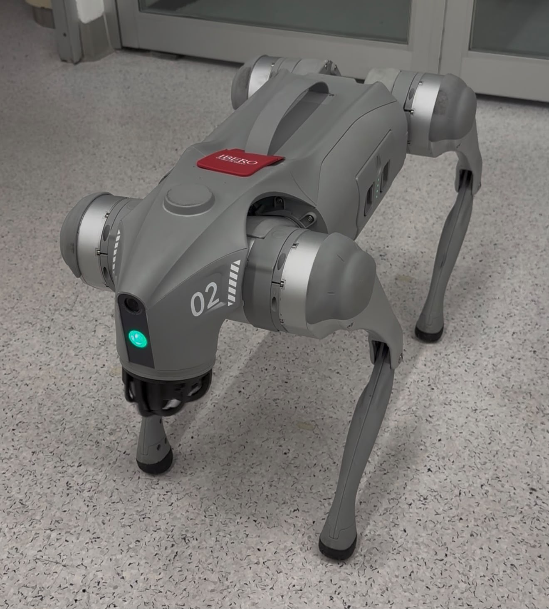
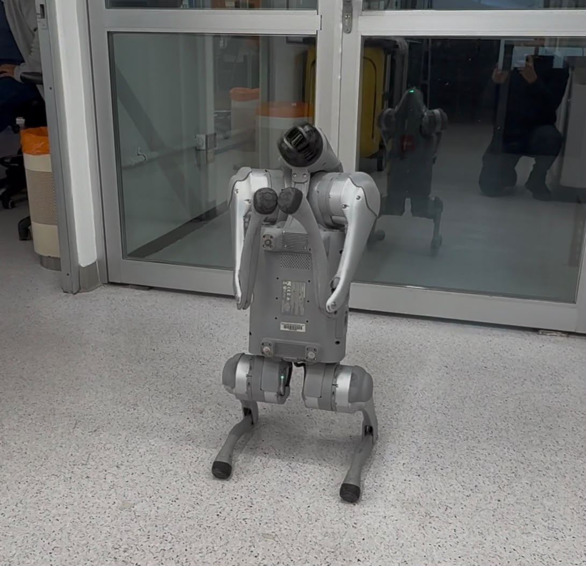

RONALDO
Conversational Agent for Autonomous Guidance
Unitree Go2 · Universidad Iberoamericana

Ronaldo project concept operating within the university campus — AI-generated image.
"Intelligence is the ability to adapt to change." — Stephen Hawking
The Project
Ronaldo is a conversational agent designed as a universal guidance system, capable of orienting people in any environment: university campuses, hospitals, museums, airports, shopping malls, or any space where visitors need assistance navigating and obtaining information.
In this project, Ronaldo is implemented and validated on the Universidad Iberoamericana (UIA) campus as a case study, using a Unitree Go2 Air quadruped robot. The system integrates Spanish speech recognition, natural language understanding, and autonomous navigation in a modular architecture based on independent processes communicating through an event bus.
Unlike conventional guidance systems, Ronaldo is not limited to executing deterministic instructions: the agent is capable of interpreting semantic commands expressed in natural language, such as "Take me to the classroom with a 4K projector" or "I want to go to the university café", and translating them into navigation plans and dialogue appropriate for the user. Its modular architecture and the use of cloud APIs allow it to be adapted to any location simply by updating the database of places, routes, and services.

Ronaldo's general architecture showing the three layers: Conversational Agent (Python), ROS2 Nodes (movement orchestration), and WebRTC (physical communication with the Unitree Go2 robot).
Featured Results
| Metric | Value |
|---|---|
| Tool Calling validity rate | 100% |
| Navigation recall (YAML classifier) | 100% |
| Critical false positives | 0% |
| Total pipeline latency | ~1.6 s |
| Peak RAM consumption | 85.7 MB |
| Idle CPU consumption | 0.7% |
| Raspberry Pi 5 viability | 1.0% RAM used |
Key Technologies
| Category | Tool |
|---|---|
| Speech Recognition (STT) | Groq Whisper, Deepgram Nova-3 |
| Language Model (LLM) | Groq Llama 4 Scout 17B |
| Speech Synthesis (TTS) | Edge TTS, Deepgram Aura-2 |
| Wake Word (offline) | Vosk (Spanish, 42 MB) |
| Voice Activity Detection | Silero VAD |
| Tool Protocol | MCP (Model Context Protocol) |
| Robotics Middleware | ROS2 Humble + CycloneDDS |
| Robot Communication | WebRTC |
| Robot Hardware | Unitree Go2 Air |
Team
| Member | Role |
|---|---|
| Fernando Pérez González | Software Development, Infrastructure, and Testing |
| Sebastián de Jesús Enguilo Ruiz | Hardware/Robot Development: Go2 |
| José Adrián Bazaldua Huerta | Software Development |
| Prof. Joel Arango Ramírez | Technical Advisor |
| Prof. Huber Girón Nieto | Methodological Advisor |
Program: Mechatronics Engineering and Cyber-Physical Systems Semester: Summer 2026 Institution: Universidad Iberoamericana, Mexico City
Presentations
- Mechatronics Engineering Coordination — Summer 2026
Quick Navigation
Project Summary · Architecture · Conversational Agent · Robot Control · Results · GitHub Repository · Foresight Practices
© 2026 — Universidad Iberoamericana · Mechatronics Engineering and Cyber-Physical Systems
Technological Foresight Practices — Previous practice repository that underpins this project.
Project Summary
This work presents Ronaldo, a conversational agent designed to guide people within a university campus using a Unitree Go2 Air quadruped robot. Ronaldo integrates speech recognition, natural language understanding, and autonomous navigation in a modular architecture based on independent processes that communicate through an event bus.
Main Components
The system employs cloud-based artificial intelligence through the free APIs of:
| Service | Model / Tool | Function |
|---|---|---|
| Groq | Whisper Large v3 Turbo | Speech transcription (STT) |
| Groq | Llama 4 Scout 17B | Language generation (LLM) |
| Deepgram | Aura-2 | Speech synthesis (TTS) |
| Edge TTS | Microsoft Edge | Alternative speech synthesis (free) |
| Vosk | Spanish model 42 MB | Offline wake word |
Robotic Control Layer
The robotic control layer relies on ROS2 Humble and WebRTC for communication with the robot, using a three-node ROS2 system that translates agent commands into physical movement instructions.
Key Results
Results from systematic testing following IEEE 29119-1, ISO 25022, and ISO 25023 standards show:
| Metric | Result |
|---|---|
| Tool calling validity rate | 100% |
| Total pipeline latency | ~1.6 seconds |
| Peak RAM consumption | 85.7 MB |
| RPi5 viability | 1.0% RAM |
These results confirm the viability of running the system on low-cost hardware such as the Raspberry Pi 5.
Keywords
intelligent agent service robotics autonomous guidance voice processing indoor navigation Unitree Go2 ROS2 WebRTC Groq MCP
1. Context and Motivation
This chapter presents the problem that motivates the development of Ronaldo, the proposed solution, and the project objectives.
1.1 The Campus Guidance Problem
The Need
The Universidad Iberoamericana (UIA) regularly receives external visitors who require orientation within the campus. This problem is not unique to UIA: any public or private space of a certain complexity faces the same challenge. In the specific case of the university, visitors include:
- First-time visitors who have never set foot on campus and are completely unfamiliar with its layout
- Parents on admission tours
- Students from other institutions attending tournaments and competitions
- New applicants during the selection process
- Occasional visitors to academic and cultural events
Although the campus is not vast in size, its layout and the similarity between several of its buildings cause visitors — especially first-time visitors — to experience difficulties in confidently locating:
- Classrooms and laboratories
- Auditoriums
- Cafeterias and dining halls
- Administrative offices
- Student services
A Universal Problem
The challenge of guiding people in unfamiliar spaces transcends the university setting. Hospitals, museums, airports, shopping malls, and government buildings share the same need: visitors who require real-time guidance in natural language with physical accompaniment to their destination. Ronaldo is conceived as a generic solution to this problem, with UIA as the first implementation and validation case.
The Current Solution and Its Limitations
In response to this need, the university has traditionally deployed dedicated staff to offer guided tours. However, this solution presents significant limitations:
| Limitation | Impact |
|---|---|
| Dependence on human guide availability | Limited resource during certain hours and seasons |
| Variable consistency | Guidance quality depends on the individual guide |
| Limited scalability | Unable to serve multiple visitors simultaneously |
| Restricted time coverage | Office hours only; no evening or weekend service |
The Research Question
This question guides the development of Ronaldo as a continuous, scalable, and consistent orientation alternative.
1.2 The Solution: Ronaldo
What is Ronaldo?
Ronaldo is an intelligent universal guidance agent capable of orienting visitors in any physical environment using a Unitree Go2 Air quadruped robot. Its architecture was designed from the ground up to be location-independent: simply updating the database of locations, routes, and services adapts it to a hospital, museum, airport, shopping mall, or any building that receives visitors.
In this project, Ronaldo is implemented and validated on the Universidad Iberoamericana campus as the first case study. The system integrates two main components:
Software Layer
Based on cloud-based artificial intelligence tools (free), through which Ronaldo maintains structured knowledge about university facilities, routes, and services:
- Spanish speech recognition (STT)
- Natural language understanding (LLM with tool calling)
- Natural speech synthesis (TTS)
- Campus database accessible via the MCP protocol
Hardware Layer
Consisting of a Unitree Go2 Air quadruped robot, which acts as a physical peripheral for interaction and user accompaniment. The robot:
- Responds to the wake word "Ronaldo"
- Executes voice commands (sit, greet, dance)
- Navigates predefined routes between campus points
- Plays voice responses through its built-in speaker
What Makes Ronaldo Different?
Unlike conventional guidance systems, Ronaldo is not limited to executing deterministic instructions. The agent is capable of:
- Interpreting semantic commands expressed in natural language
- "Take me to the classroom with a 4K projector" ⚠️ Situational inference issues: the LLM does not always correctly infer that it needs to search for a room with that specific feature, requiring prompt refinement. - "I want to go to the university café" - "Where are the vending machines?"
- Translating intentions into navigation plans
- The two-stage classifier identifies the user's intent - The dialogue engine queries updated information through tools - The system resolves optimal routes to the destination
- Maintaining contextual conversations
- 20-turn conversation memory - Recognition and use of the user's name - Confirmation before executing critical actions
Capabilities Summary
| Capability | Description |
|---|---|
| 🗣️ Speech Recognition | Spanish transcription with Groq Whisper (750 ms) |
| 🧠 Language Understanding | Llama 4 Scout 17B with tool calling |
| 🗺️ Autonomous Navigation | Predefined JSON routes, executed via ROS2 |
| 🏫 Campus Knowledge | Database accessible via MCP protocol |
| 🎤 Speech Synthesis | Natural responses with Edge TTS / Deepgram |
| 🔌 Partial Offline Operation | Wake word without internet (Vosk) |
| 📱 Low-Cost Hardware | Runnable on Raspberry Pi 5 (~86 MB RAM) |
1.3 Objectives
General Objective
Build a conversational agent capable of receiving instructions in natural language, querying structured university campus information through external tools, and translating dialogue decisions into physical movements of a Unitree Go2 quadruped robot.
Specific Objectives
1. Complete Voice Pipeline
- Implement a capture, transcription, and speech synthesis system in Spanish
- Use free cloud APIs (Groq, Deepgram, Edge TTS)
- Ensure offline wake word detection (Vosk)
2. Natural Language Understanding
- Implement two-stage intent classification (YAML + LLM)
- Integrate native tool calling to query campus information
- Maintain 20-turn conversational memory
3. Robot Control
- Establish WebRTC communication with the Unitree Go2
- Implement three ROS2 nodes for commands and navigation
- Define predefined navigation routes between campus points
4. Integration with UIA
- Connect the agent with real campus information via MCP
- Map university destinations and services
- Support queries about places, food, stores, and offices
5. Evaluation and Validation
- Test the system in 4 phases under IEEE 29119-1, ISO 25022, and ISO 25023 standards
- Measure latency, resource consumption, and classification accuracy
- Verify viability on low-cost hardware (Raspberry Pi 5)
Scope and Exclusions
| Included | Excluded (Future Work) |
|---|---|
| Navigation with predefined routes | SLAM (dynamic navigation) |
| Preprogrammed robot commands | Continuous motion commands (cmd_vel) |
| YAML classification of 7 destinations | Routes from any origin |
| 4 phases of quantitative testing | Testing with real users |
| Operation with free cloud APIs | 100% offline operation |
2. System Architecture
This chapter presents the complete architecture of Ronaldo: the three system layers, processes, event bus, technology stack, and cloud vs. local distribution.
2.1 Overview
General Architecture Diagram
Ronaldo's general architecture showing the three layers connecting the conversational agent with the robot hardware.
The Three Layers
Ronaldo is organized into three architectural layers that communicate hierarchically:
Layer 1: Voice Assistant
Technology: Python · multiprocessing
Includes the audio, orchestrator, and playback processes, as well as the dialogue engine with the LLM and the intent classifier. This is the layer where the system's intelligence resides.
Layer 2: ROS2 Nodes
Technology: ROS2 Humble · CycloneDDS · C++/Python
Three ROS2 nodes that translate the agent's decisions into movement commands and navigation routes. Acts as an intermediary between the conversational logic and the robot hardware.
Layer 3: WebRTC
Technology: WebRTC · C++
Signaling protocol and data channel that sends instructions to the Unitree Go2 robot. This is the physical communication layer with the hardware.
Design Principles
The architecture was chosen for three main reasons:
1. Fault Isolation
If the audio process fails, the orchestrator and voice playback continue to function. The system can recover without a full restart.
2. Real Parallelism
Each process can run on a different CPU core, which is essential for tasks such as real-time audio processing while awaiting the language model's response.
3. Modularity
Each component can be replaced independently. For example, the speech recognition engine can be changed from Groq to Deepgram by modifying only the corresponding module, without affecting the rest of the system.
The Robot Is Not Autonomous
2.2 Layer Diagram
Data Flow Between Layers

Figure 1: Data flow diagram between the 3 system layers. Layer 1: Voice Assistant (Python) with microphone, AudioProcess, Orchestrator, Groq LLM, YAML Classifier, and TTS. Layer 2: ROS2 Nodes (UnitreeRobotProcess, go2_command_executor, go2_route_follower, go2_driver_node). Layer 3: WebRTC to the Unitree Go2 Air.
Layer 1 Components
| Component | Process | Function |
|---|---|---|
| AudioProcess | audio.py |
Microphone capture, wake word, VAD |
| Orchestrator | orquestador.py |
Central orchestration, classification, dialogue |
| AudioPlayback | playback.py |
TTS response playback |
| UnitreeRobotProcess | unitree_robot.py |
Robot command and route management |
Layer 2 Components
| Component | ROS2 Node | Function |
|---|---|---|
| Main Driver | go2_driver_node |
WebRTC connection, status publishing |
| Command Executor | go2_command_executor_node |
Preprogrammed commands (sit, dance) |
| Route Follower | go2_route_follower_node |
Step-by-step JSON route execution |
Layer 2 Architecture in Detail

Figure 2: ROS2 node architecture with their topics. Shows the shared workspace (JSON files), the 3 main nodes (go2_command_executor_node, go2_route_follower_node, go2_driver_node), and communication topics (/webrtc_req, /cmd_vel_out, /odom, /go2_states).
2.3 Processes and Event Bus
The Four Main Processes
Ronaldo runs four independent processes that communicate through a shared event bus.

Figure 3: The four system processes (AudioProcess, Orchestrator, PlaybackProcess, UnitreeRobotProcess) communicating bidirectionally through the central EventBus based on multiprocessing.Queue.
The Event Bus (EventBus)
The event bus is Ronaldo's nervous system. It implements a publisher-subscriber pattern:
- Any process can publish an event, and it is automatically distributed to all other processes.
- Each process has its own private queue from which it reads only the events of interest.
- Ignored events are simply discarded from the read buffer.
Main Events
| Event | Publisher | Consumers | Meaning |
|---|---|---|---|
SPEECH_COMPLETED |
AudioProcess | Orchestrator | User audio captured and ready to transcribe |
MOVEMENT_COMPLETED |
UnitreeRobotProcess | Orchestrator, Playback | Robot reached destination or completed command |
CONVERSATION_CONTINUING |
Orchestrator | AudioProcess | Conversation mode active, keep listening |
AUDIO_SYNTHESIZED |
Orchestrator | Playback | TTS response ready to play |
ROBOT_COMMAND |
Orchestrator | UnitreeRobotProcess | Execute command on the robot |
MOVEMENT_SEQUENCE_READY |
Orchestrator | UnitreeRobotProcess | Route sequence ready to execute |
Bus Reliability
The EventBus was tested with 100 events under stress, showing:
| Metric | Value |
|---|---|
| Events sent | 100 |
| Events received | 100 |
| Losses | 0 |
| Out of order | 0 |
| Throughput | 1,300 events/second |
Description of Each Process
AudioProcess
State machine with three modes: WAKE_WORD (listens for the word "ronaldo"), LISTENING (captures command), COOLDOWN (post-response cooldown). Uses Vosk (offline) for wake word detection and Silero VAD to detect end of speech.
Orchestrator
Central brain. Classifies intents (YAML + LLM), executes actions (direct commands or navigation), and manages conversational dialogue with 20-turn memory.
PlaybackProcess
Plays TTS responses in two modes: streaming (fragments while generating) and complete (full audio at once).
UnitreeRobotProcess
Bridge between the Python agent and ROS2 nodes. Writes JSON command and route files, monitors results.
2.4 Technology Stack
Technologies by Category
Voice Processing
| Service | Technology | Use in Ronaldo |
|---|---|---|
| Groq Whisper | Whisper Large v3 Turbo | Main speech recognition (STT) |
| Deepgram Nova-3 | Deepgram API | Alternative STT with streaming |
| Edge TTS | Microsoft Edge | Default speech synthesis (TTS) |
| Deepgram Aura-2 | Deepgram API | High-quality alternative TTS |
| Vosk | Spanish model 42 MB (offline) | Wake word "ronaldo" |
| Silero VAD | ONNX (offline) | Voice activity detection |
Artificial Intelligence
| Component | Technology | Detail |
|---|---|---|
| Main LLM | Groq Llama 4 Scout 17B | 17B parameters, accelerated inference |
| Classifier | Hybrid YAML + LLM | Two stages: patterns + language model |
| Tool Calling | Native implementation | MCP integration |
| Memory | In-memory history | 20 conversation turns |
Robotics
| Component | Technology | Version |
|---|---|---|
| Middleware | ROS2 | Humble |
| DDS | CycloneDDS | - |
| Robot Communication | WebRTC | Bidirectional data channel |
| Robot | Unitree Go2 Air | Quadruped with LiDAR, camera, IMU |
| Robot SDK | go2_ros2_sdk | Main ROS2 nodes |
| Custom Control | unitree_go2_unitree | Custom routes and commands |
Infrastructure
| Component | Technology | Note |
|---|---|---|
| Language | Python 3.12+ | Entire conversational agent |
| Package Management | uv | Installation and dependencies |
| IPC | multiprocessing.Queue | Inter-process communication |
| Database | SQLite (read-only mode) | Access via MCP |
| Protocol | MCP (Model Context Protocol) | LLM ↔ DB intermediation |
Key Python Dependencies
| Package | Version | Function |
|---|---|---|
vosk |
≥ 0.3.45 | Offline wake word |
silero-vad |
≥ 5.1 | Voice Activity Detection |
edge-tts |
≥ 6.1 | Free speech synthesis |
groq |
≥ 0.15.0 | Groq API (STT + LLM) |
deepgram-sdk |
≥ 3.7 | Alternative Deepgram API |
psutil |
≥ 5.9 | Resource monitoring |
pyyaml |
≥ 6.0 | Classifier and route configuration |
httpx |
≥ 0.27 | Async HTTP client for APIs |
2.5 Cloud vs Local
Compute Distribution
A key architectural decision in Ronaldo was to offload intensive processing to remote servers, keeping only lightweight tasks on local hardware.

Figure 4: Compute distribution between local hardware (Vosk, Silero VAD, Edge TTS) and cloud services (Groq Whisper STT, Groq Llama 4 Scout LLM, MCP Server, Deepgram Aura-2 TTS).
The latency values presented in this section were obtained from 50 tests per provider, conducted under controlled laboratory conditions.
Provider Comparison
Speech-to-Text (STT)
| Provider | Latency | Accuracy | Requires Internet | Cost |
|---|---|---|---|---|
| Groq Whisper | ~750 ms | High | Yes | Free tier |
| Deepgram Nova-3 | ~500 ms | Very high | Yes | Free tier |
| Google Cloud STT | ~600 ms | Very high | Yes | Limited |
| Parakeet (ONNX) | ~2000 ms | Medium | No | Free |
Text-to-Speech (TTS)
| Provider | Latency | Naturalness | Requires Internet | Cost |
|---|---|---|---|---|
| Edge TTS | ~500 ms | High | Yes | Free |
| Deepgram Aura-2 | ~400 ms | Very high | Yes | Free tier |
| Local TTS (coqui) | ~1500 ms | Medium | No | Free |
Raspberry Pi 5 Viability
One of the most relevant conclusions from testing is that Ronaldo can run on a Raspberry Pi 5 with 8 GB of RAM:
| Metric | Ronaldo | RPi5 Available | % Used |
|---|---|---|---|
| Peak RAM | 85.7 MB | 8,192 MB | 1.0% |
| Idle RAM | 23.5 MB | 8,192 MB | 0.3% |
| Peak CPU | 10% (1 core) | 4 Cortex-A76 cores | 2.5% |
Fallback Strategy
The system is designed to operate without an internet connection for certain functions:
| Function | With Internet | Without Internet |
|---|---|---|
| Wake word | Vosk | ✅ Vosk (always offline) |
| Speech recognition | Groq Whisper | ⚠️ Local Parakeet |
| Language understanding | Groq Llama 4 Scout | ❌ Not available |
| Speech synthesis | Edge TTS | ⚠️ Local Coqui TTS |
| Campus queries | MCP Server | ❌ Not available |
3. Conversational Agent
This chapter details the heart of the system: the complete voice pipeline, wake word detection, speech recognition and synthesis, intent classification, the dialogue engine with tool calling, the MCP server, conversational memory, and anti-feedback mechanisms.
3.1 Voice Pipeline
Complete Processing Flow
Ronaldo's voice pipeline transforms a spoken question into an audible response in approximately 1.6 seconds.

Figure 5: Complete voice processing pipeline. Flow: Microphone (16 kHz, 512 samples) → Vosk Wake Word (< 200 ms) → Silero VAD → Groq Whisper STT (~750 ms) → YAML+LLM Classifier → Groq Llama 4 Scout (~350 ms) → Edge TTS (~500 ms) → Speaker. Total pipeline time: ~1.6 seconds.
The values presented in the breakdown were obtained from 50 runs of the complete pipeline, measuring each stage individually.
Latency Breakdown
| Stage | Technology | Time | Offline |
|---|---|---|---|
| Audio capture | PyAudio | Continuous | Yes |
| Wake Word | Vosk (42 MB) | < 200 ms | ✅ |
| Voice Activity Detection | Silero VAD | < 50 ms | ✅ |
| Speech recognition (STT) | Groq Whisper | ~750 ms | No |
| YAML classification | Local patterns | < 1 ms | ✅ |
| Understanding (LLM) | Groq Llama 4 Scout | ~350 ms | No |
| ToolValidator | Local validation | < 0.01 ms | ✅ |
| Speech synthesis (TTS) | Edge TTS | ~500 ms | No |
| Total Pipeline | ~1,600 ms |
Audio Parameters
| Parameter | Value | Justification |
|---|---|---|
| Sample rate | 16 kHz | Standard for speech recognition |
| Fragment size | 512 samples (~32 ms) | Balance between latency and processing |
| Format | 16-bit PCM mono | Compatible with all STT providers |
| Wake word circular buffer | 0.5 seconds | Avoid missing the start of the command |
| Silence for end of speech | 1 continuous second | Robust detection of command end |
3.2 Wake Word and VAD
AudioProcess State Machine
The audio process operates as a state machine with three well-defined modes:

Figure 6: AudioProcess state machine with three modes: WAKE_WORD (listens for "ronaldo" with offline Vosk), LISTENING (captures command with Silero VAD, 1s silence detection), and COOLDOWN (~3s post-response cooldown to prevent acoustic feedback).
Wake Word Detection
Ronaldo uses Vosk, an offline speech recognition model, to detect the word "ronaldo".
Vosk Features
| Feature | Value |
|---|---|
| Model | vosk-model-small-es-0.42 |
| Size | 42 MB |
| Operation | Completely offline |
| Detection time | < 200 ms |
| Circular buffer | 0.5 seconds |
Why Vosk?
- No internet required: the system can activate even without a connection
- Lightweight: only 42 MB, fits on any device
- Fast: detection in less than 200 ms
- Accurate in Spanish: trained specifically for Spanish
Voice Activity Detection (VAD)
Once the wake word is detected, Silero VAD determines when the user has finished speaking.
Silero VAD Features
| Parameter | Value |
|---|---|
| Model | Silero VAD (ONNX) |
| Detection threshold | 0.4 (0-1 scale) |
| Silence for end | 1 continuous second |
| Operation | Offline |
Operation
- Each audio fragment (32 ms) is analyzed by Silero VAD
- If voice is detected → silence counter resets
- If silence is detected → counter increments
- When the counter reaches 1 continuous second → command finished
- Captured audio is sent to the orchestrator for transcription
COOLDOWN Mode
After sending the command to the orchestrator, the system enters cooldown mode for approximately 3 seconds (configurable). This prevents:
- The microphone from capturing the echo of the robot's response
- Accidentally processing a new interaction
- The system from entering an acoustic feedback loop
3.3 STT — Speech Recognition
Supported Providers
Ronaldo supports multiple Speech-to-Text providers, configurable from an environment file (.env).
| Provider | Model | Average Latency | Streaming | Offline | Cost |
|---|---|---|---|---|---|
| Groq Whisper | whisper-large-v3-turbo |
750 ms | No | No | Free tier |
| Deepgram Nova-3 | Nova-3 | ~500 ms | ✅ | No | Free tier |
| Google Cloud STT | Standard | ~600 ms | ✅ | No | Limited |
| Parakeet (ONNX) | Local ONNX | ~2000 ms | No | ✅ | Free |
Groq Whisper (Default)
The default provider is Groq Whisper, which offers:
- Speed: transcription in ~750 ms (median P50: 708 ms)
- Accuracy:
whisper-large-v3-turbomodel optimized by Groq
- Free: generous free tier enabling all testing at no cost
- Native Spanish: excellent language recognition
Performance Metrics (Groq Whisper)
| Metric | Time (ms) |
|---|---|
| Average | 750.7 |
| Median (P50) | 708.2 |
| P95 | 1025.0 |
| Maximum | 1025.0 |
Deepgram Nova-3 (Alternative)
Deepgram offers streaming transcription, ideal for long commands:
- Audio is sent in real time as it is captured
- Partial transcription is displayed before the user finishes speaking
- Reduces perceived latency for extended commands
Parakeet (Local)
For offline operation, Parakeet runs an ONNX model entirely on the computer:
- Advantage: works without internet
- Disadvantage: ~2 seconds latency (slower than cloud)
- Use: fallback when no connection is available
Transcription Method
Regardless of the provider, the flow is the same:
AudioProcesscaptures audio and detects end of speech
- Audio is sent to the
Orchestratoras a byte array (16 kHz, mono)
- The
Orchestratorinvokes the configured STT provider
- Transcribed text is passed to the intent classifier
- If the classifier does not recognize the command, the text is sent to the LLM
3.4 TTS — Speech Synthesis
Supported Providers
The assistant's response is converted to audio via a text-to-speech engine. Ronaldo supports three configurable providers.
| Provider | Spanish Voices | Latency | Quality | Requires Internet | Cost |
|---|---|---|---|---|---|
| Edge TTS | Yes (several) | ~500 ms | High | Yes | Free |
| Deepgram Aura-2 | Yes (natural) | ~400 ms | Very high | Yes | Free tier |
| Local TTS | Yes (limited) | ~1500 ms | Medium | No | Free |
Edge TTS (Default)
The default provider is Edge TTS, based on the Microsoft Edge synthesis engine:
- Free: no usage limits or API key required
- Natural: Spanish voices with appropriate intonation and prosody
- Fast: ~500 ms to generate audio for a typical response
- Streaming: supports fragment-based playback while generating
Available Spanish Voices
| Voice | Gender | Style |
|---|---|---|
es-MX-DaliaNeural |
Female | Mexican natural |
es-MX-JorgeNeural |
Male | Mexican natural |
es-ES-AlvaroNeural |
Male | Spanish natural |
es-ES-ElviraNeural |
Female | Spanish natural |
Deepgram Aura-2 (High Quality)
Deepgram offers superior quality speech synthesis with natural Spanish voices:
- Latency: ~400 ms
- Naturalness: voices indistinguishable from a real person
- Available: free tier with initial credits
- Streaming: fragment-based playback
Playback Modes
The PlaybackProcess supports two playback modes:
Streaming Mode
- Audio is generated and played in consecutive fragments
- The user hears the response while it continues to be generated
- Significantly reduces perceived wait time
Complete Mode
- Full audio is generated and then played
- Useful for very short responses or when streaming is unavailable
- Higher perceived latency for the user
Playback Flow
LLM generates text → TTS generates audio → PlaybackProcess receives audio
→ If streaming: plays fragments as they arrive
→ If complete: waits for full audio and plays
→ PLAYBACK_COMPLETED event → System returns to listening3.5 Intent Classification
Two-Stage Hybrid System
Ronaldo uses a hybrid classifier that combines speed (YAML) with intelligence (LLM).

Figure 7: Hybrid intent classification system. First stage: Pattern-based YAML classifier (navigation → NAVEGAR_DESTINO, commands → COMANDO_ROBOT). Second stage: LLM with Tool Calling for unrecognized intents (navigate_to, search_food, or direct text response).
First Stage: YAML Classifier
The YAML configuration file defines text patterns to recognize intents without going through the LLM:
navigation:
- patterns: ["biomedica", "biomédica", "biomedicas"]
intent: NAVEGAR_BIOMEDICA
- patterns: ["biblioteca", "biblioteca francisco xavier"]
intent: NAVEGAR_BIBLIOTECA
- patterns: ["karpa", "la karpa", "cafeteria"]
intent: NAVEGAR_KARPA
- patterns: ["maquinas", "máquinas", "laboratorio de maquinas"]
intent: NAVEGAR_MAQUINAS
- patterns: ["giornale", "gironale"]
intent: NAVEGAR_GIORNALE
commands:
- patterns: ["sientate", "siéntate", "sentado"]
intent: COMANDO_SIT
- patterns: ["parate", "párate", "levantate"]
intent: COMANDO_STAND_UP
- patterns: ["baila", "bailar"]
intent: COMANDO_DANCE
- patterns: ["saluda", "saludar", "hola"]
intent: COMANDO_HELLO
- patterns: ["acuestate", "acuéstate"]
intent: COMANDO_STAND_DOWNAdvantages of the YAML Classifier
- Latency < 1 ms: instant string comparison
- No API call: does not consume Groq credits at this stage
- Deterministic: 100% predictable for known commands
- Perfect navigation recall: 100% in tests
Second Stage: LLM with Tool Calling
When the YAML classifier does not recognize the command, the text is sent to the language model:
- The LLM analyzes the user's intent
- Decides whether to query external tools (MCP)
- If the intent is navigation: invokes
navigate_to
- If it is an informational query: invokes search tools (food, places, offices)
- If it is casual conversation: generates a direct text response
Classification Results (Phase 2)
| Class | Precision | Recall | F1-Score |
|---|---|---|---|
| Navigation | 0.7692 | 1.0000 | 0.8696 |
| Commands | 0.8889 | 0.8000 | 0.8421 |
| Conversation | 0.5556 | 0.7692 | 0.6452 |
| Noise | 0.0000 | 0.0000 | 0.0000 |
3.6 Dialogue Engine and Tool Calling
Tool Calling Flow
One of Ronaldo's most important capabilities is that the language model can decide to use external tools to obtain real campus information, rather than generating invented responses.

Figure 8: Tool Calling flow sequence diagram. User → Groq Llama 4 Scout → ToolValidator (verifies existence, types, and values) → MCP Server (executes tool with parameterized SQL) → UIA Database (read-only mode) → result → LLM generates natural response.
Available Tools (5 Categories)
1. Places (search_places)
- Search places by name or type
- Get details of a specific place
- List all campus places
2. Food (search_food)
- Search dishes and restaurants
- Get daily menus
- Filter by food type
3. Stores (search_products)
- Search products in campus stores
- Check inventory
- View prices and availability
4. Services (search_services)
- Search professor offices
- Get list of access doors
- Administrative information
5. Context (campus_context)
- Campus overview
- Traffic levels
- Document search
Multi-Tool Dialogue Example
User: "I want to go eat"
LLM: search_food(category="all")
→ "There are: Tacos Don Julio, Sushi Nagoya, Cafe Borrego.
What type of food do you prefer?"
User: "Tacos"
LLM: search_food(category="tacos")
→ "Tacos Don Julio is in the Giornale building.
Would you like to go?"
User: "Yes, take me"
LLM: navigate_to(destination="Giornale")
→ "Let's go! Follow me to the Giornale building."Tool Call Validation (ToolValidator)
Before executing any tool, the ToolValidator inspects the call generated by the LLM:
| Verification | Description |
|---|---|
| Tool existence | Is it defined in the schema? |
| Required fields | Are mandatory parameters missing? |
| Correct types | Are values of the expected type? |
| Enumerated values | Are values in the allowed list? |
| Nulls | Are there parameters with None value? |
ToolValidator Overhead
| Metric | Time |
|---|---|
| Average | 0.004 ms |
| P95 | 0.005 ms |
| Maximum (P99) | 0.026 ms |
navigate_to.
3.7 MCP Server
Model Context Protocol (MCP)
The component that connects the agent to the university's structured information is a server implementing the Model Context Protocol (MCP).

Figure 9: Model Context Protocol (MCP) architecture. The Ronaldo agent (LLM + ToolValidator) communicates with the MCP Server (typed tools, token bearer), which in turn queries the UIA database (SQLite, read-only mode) via parameterized SQL without exposing direct queries to the LLM.
Why MCP?
The MCP protocol operates as an intermediation layer between the language model and the campus database. Instead of exposing SQL queries directly, the server publishes a set of typed and parameterized tools.
Advantages of the Approach
| Feature | Benefit |
|---|---|
| Typed tools | Each tool has parameters with defined types |
| Parameterized SQL | Prevents SQL injection |
| Read-only mode | Mitigates impact of prompting errors |
| Decoupling | Changing data source does not affect the LLM |
| Token bearer | Shared authentication between services |
Security
Server access is protected by multiple layers:
- Bearer Token: shared by all internal services
- Read-only connections: the database operates exclusively in read mode
- Validated parameters: the ToolValidator inspects before sending to MCP
- No direct SQL: the LLM never sees or generates SQL queries
MCP Tool Example
{
"name": "search_places",
"description": "Search campus places by name, type, or characteristics",
"parameters": {
"type": "object",
"properties": {
"query": {
"type": "string",
"description": "Search text (place name, type, etc.)"
},
"place_type": {
"type": "string",
"enum": ["cafeteria", "classroom", "laboratory", "auditorium", "office", "store", "restroom", "all"],
"default": "all"
}
},
"required": ["query"]
}
}Binding with Agent Tools
MCP tools are exposed to the LLM as tools it can invoke during dialogue. The agent autonomously decides which tool to use based on the conversational context.
3.8 Multi-Turn Memory
Conversation History
Ronaldo maintains a history of the last 20 turns of conversation. This allows it to remember the context of previous interactions without the user needing to repeat information.
Multi-Turn Conversation Example
Turn 1:
User: "I want to go eat"
Ronaldo: "What type of food are you in the mood for?"
Turn 2:
User: "Tacos"
Ronaldo: [search_food("tacos")]
"There's Tacos Don Julio in the Giornale building.
Would you like to go?"
Turn 3:
User: "Yes, take me"
Ronaldo: [navigate_to("Giornale")]
"Let's go! Follow me to the Giornale building."User Name Memory
When the user introduces themselves, the system automatically extracts the name and remembers it for the entire session:
User: "Hello Ronaldo, my name is Armando"
Ronaldo: "Hello Armando! How can I help you?"
... (several turns later) ...
User: "What do you recommend?"
Ronaldo: "Armando, I would recommend visiting La Karpa cafeteria..."Dynamic Prompt System
The system prompt received by the LLM is dynamically updated on each interaction:
[ROBOT LOCATION]
The robot is currently at: Robotics Laboratory
[USER CONTEXT]
User name: Armando
Last query: food
[AVAILABLE PLACES]
- La Karpa (cafeteria) — open 8:00-18:00
- Giornale (building) — Tacos Don Julio, Sushi Nagoya
- Library F.X. Clavijero — open 7:00-22:00
[TOOL GUIDELINES]
- Use search_food for food-related queries
- Use search_places to locate places
- Use navigate_to only after confirming with the user
- Do not execute actions without user confirmationLimits and Behavior
| Feature | Value |
|---|---|
| Maximum turns | 20 (FIFO) |
| User name | Persists entire session |
| Dynamic prompt | Updated each turn |
| Context clear | On new session start or explicit command |
3.9 Anti-Feedback Mechanisms
The Acoustic Loop Problem
When a robot plays audio through its speaker while having an active microphone, an acoustic feedback loop can occur: the robot hears its own response, interprets it as a new command, generates another response, and so on.
Ronaldo implements three mechanisms to prevent this phenomenon.
Mechanism 1: Microphone Muting During Response
While the robot is playing a TTS response, the audio process completely ignores microphone samples.
State: PLAYING
└── AudioProcess: all microphone samples → discarded
└── No audio is processed until playback endsMechanism 2: Post-Response Cooldown Time
After the robot finishes speaking, the system waits for a configurable time:
| Parameter | Default Value | Description |
|---|---|---|
cooldown_time |
3 seconds | Wait before listening again |
| Location | AudioProcess (COOLDOWN state) |
Part of the state machine |
During this time, the microphone is completely ignored, even if the user says "Ronaldo".
Mechanism 3: Audio Buffer Flushing
Just before starting to play a response, the system discards any recently captured audio from the circular buffer. This eliminates residual fragments that may have been captured during the state transition.
State Diagram with Anti-Feedback
The AudioProcess with anti-feedback mechanisms operates as follows:
- WAKE_WORD → LISTENING: on detecting "ronaldo"
- LISTENING → PROCESSING: command captured
- PROCESSING → MUTED_MIC: microphone muted and buffer flushed during TTS playback
- MUTED_MIC → COOLDOWN: playback completed
- COOLDOWN → WAKE_WORD: after 3 seconds of configurable wait
Protection Summary
| Mechanism | When Activated | Effect |
|---|---|---|
| Microphone muting | During TTS playback | Ignores all samples |
| Cooldown | After playback | Waits 3s before listening |
| Buffer flushing | Before playing response | Discards residual audio |
4. Unitree Go2 Robot Control
This chapter details the control of the Unitree Go2 Air quadruped robot: its capabilities, network modes, WebRTC communication, ROS2 node architecture, shared JSON file system, navigation routes, 30 preprogrammed commands, and destination mapping.
4.1 The Robot and Its Capabilities
Unitree Go2 Air
The Unitree Go2 Air is a state-of-the-art quadruped robot designed for research, education, and service applications. It is the physical platform on which Ronaldo operates.

The Unitree Go2 Air used in the project.

Additional view of the Unitree Go2 Air in the laboratory.
Technical Specifications
| Component | Specification |
|---|---|
| Type | Quadruped robot |
| Degrees of freedom | 12 (4 legs × 3 DOF) |
| Weight | ~15 kg |
| Maximum speed | ~5 m/s |
| Sensors | 360° LiDAR, Intel RealSense depth camera, 9-DOF IMU |
| Processor | NVIDIA Jetson Orin NX (onboard) |
| Connectivity | WiFi (AP/STA), Bluetooth, Ethernet |
| Speaker | Built-in (for TTS responses) |
| Microphone | Built-in (for voice commands) |
| Battery | ~2 hours of continuous operation |
Robot Capabilities
Posture Commands
| Command | API ID | Description |
|---|---|---|
| StandUp | 1004 | Stand on all four legs |
| StandDown | 1005 | Lie down on the ground |
| Sit | 1009 | Sit down |
| BalanceStand | 1002 | ❌ Not functional — not implemented |
| Damp | 1001 | Disable motors (free mode) |
| StopMove | 1003 | ❌ Not functional — not implemented |

Robot in balance mode on two legs (BalanceStand).
Tricks and Animations
| Command | API ID | Description |
|---|---|---|
| Hello | 1016 | Greeting with front paw |
| Dance1 | 1022 | Choreographed dance 1 |
| Dance2 | 1023 | ❌ Not functional — not implemented |
| FrontFlip | 1030 | Forward flip |
| FrontJump | 1031 | Forward jump |
| Handstand | 1301 | ❌ Not functional — not implemented |
| Bound | 1304 | ❌ Not functional — not implemented |
Continuous Movement
| Command | API ID | Description |
|---|---|---|
| Move | 1008 | Continuous speed (Twist control) |
The Robot in Ronaldo's Ecosystem
- Not autonomous: requires explicit user commands for each movement
- Acts as a peripheral: the conversational agent (Python) is the brain
- Bidirectional communication: receives commands and transmits status (odometry, IMU, LiDAR)
- Built-in speaker: plays voice responses synthesized by the TTS
4.2 Network Modes
Two Connection Modes
The Unitree Go2 supports two network modes for communication with the control PC:
AP Mode (Access Point)
The robot creates its own WiFi network.
| Feature | Value |
|---|---|
| SSID | Unitree_Go2_XXXX |
| Robot IP | 192.168.12.1 (fixed) |
| PC connects to robot | Direct connection, no router |
| Internet on PC | ❌ Lost |
Advantage: Direct connection without infrastructure. Disadvantage: PC loses internet access → cloud APIs (Groq, Deepgram) do not work.
STA Mode (WiFi Client) — Used in the project
The robot connects to an existing WiFi network as a normal client.
| Feature | Value |
|---|---|
| Robot IP | Obtained via DHCP |
| PC and robot on same network | Same subnet |
| Internet on both | ✅ Both have access |
| Configuration | From the Unitree Go2 app (phone) |
Advantage: Both PC and robot have internet → cloud APIs work. Disadvantage: Requires an available WiFi network.
Project Configuration
This project uses STA mode with a phone hotspot connected to the university network:
[Internet] ← [Phone Hotspot] ← [WiFi]
↓ ↓
[Ubuntu PC] [Unitree Go2]
(same subnet) (same subnet)
↓
[Cloud APIs: Groq, Deepgram]Communication Ports
| Protocol | Port | Purpose |
|---|---|---|
| WebRTC (signaling) | 9991 | HTTP handshake + SDP exchange |
| WebRTC (data) | Dynamic | Bidirectional data channel |
| ROS2 (DDS) | Dynamic | Communication between ROS2 nodes |
Stability
STA mode proved to be stable during test sessions of up to 30 minutes, with no significant packet loss on the WebRTC control channel.
4.3 WebRTC Communication
Connection Handshake
The Unitree Go2 robot uses WebRTC (Web Real-Time Communication) as the control protocol. The connection is established in three phases:

Figure 11: WebRTC handshake sequence between PC (go2_driver_node) and Unitree Go2. Phase 1: HTTP Handshake (GET /con_notify on port 9991, public key). Phase 2: SDP exchange encrypted with AES-256/RSA (POST /con_ing_(path)). Phase 3: Bidirectional WebRTC DataChannel establishment for commands and telemetry.
JSON Command Structure
Each command is sent as a JSON message over the WebRTC data channel:
{
"type": "msg",
"topic": "rt/api/sport/request",
"data": {
"header": {
"identity": {
"id": 12345,
"api_id": 1009
},
"policy": {
"priority": 0,
"noreply": true
}
},
"parameter": "{}",
"binary": []
}
}Key Fields
| Field | Description |
|---|---|
api_id |
Preprogrammed command identifier (1001-1304) |
identity.id |
Session ID (incremental) |
parameter |
Additional parameters in JSON (usually empty) |
policy.noreply |
true = do not wait for robot response |
topic |
Robot's internal ROS2 topic |
WebRTC Channels
Although the protocol supports multiple channels:
| Channel | Used in Ronaldo | Purpose |
|---|---|---|
| DataChannel | ✅ Yes | Control commands and telemetry |
| Video (H264) | ❌ No | Camera streaming |
| Audio | ❌ No | Audio streaming |
The project uses only the data channel to send movement instructions.
4.4 ROS2 Nodes
ROS2 Middleware
The robot's motion control is implemented on ROS2 Humble, using CycloneDDS as the communication middleware.
Three Main Nodes
The three ROS2 nodes operate as follows (see detailed diagram in section 2.2):
Node 1: go2_driver_node (Main Driver)
- Maintains the WebRTC connection with the robot
- Publishes robot status:
- /go2_states — general status - /odom — odometry - /imu — inertial unit - /joint_states — joint positions - /point_cloud2 — LiDAR point cloud
- Subscribes to:
- /cmd_vel_out — Twist velocity commands - /webrtc_req — WebRtcReq preprogrammed commands
- Sends both command types to the physical robot via WebRTC
Node 2: go2_command_executor_node (Command Executor)
- Monitors the file
~/ros2_ws/commands/execute_command.json
- Detects
mtimechanges in the file
- Reads the command and translates it to
api_id
- Publishes a
WebRtcReqon/webrtc_req
- Waits for the result and writes it to
~/ros2_ws/commands/command_result.json
Node 3: go2_route_follower_node (Route Follower)
- Monitors
~/ros2_ws/rutas/command.json
- Receives
executecommands with route name
- Loads the route JSON file
- Executes steps sequentially:
- Each step → Twist command on /cmd_vel_out - go2_driver_node forwards it to the robot
- Writes progress to
~/ros2_ws/rutas/status.json
Supporting Nodes
In addition to the three main nodes, auxiliary nodes are launched:
| Node | Function |
|---|---|
robot_state_publisher |
Publishes robot TF transforms |
lidar_to_pointcloud |
Decodes LiDAR data |
pointcloud_to_laserscan |
Converts point cloud to LaserScan |
twist_mux |
Twist command multiplexer |
Third-Party Software
The robot control system is based on two main repositories:
| Repository | Content |
|---|---|
go2_ros2_sdk |
Main ROS2 nodes and custom messages |
unitree_go2_unitree |
Route files, commands, and route follower modifications |
4.5 Shared JSON File System
File-Based Communication
Coordination between the Python agent and the ROS2 nodes is accomplished via JSON files in a shared workspace directory. This mechanism was chosen for its simplicity and robustness: it eliminates the need for complex synchronization between processes and allows both sides to operate asynchronously.

Figure 13: Communication flow via JSON files between the Python agent (UnitreeRobotClient) and ROS2 nodes. UnitreeRobotClient writes execute_command.json and command.json; monitors command_result.json and status.json. Nodes go2_command_executor_node and go2_route_follower_node detect mtime changes and write results. Everything occurs in the shared workspace ~/ros2_ws/.
Command Files
execute_command.json (Input)
The UnitreeRobotClient writes the command to execute:
{
"command": "sit",
"timestamp": "2026-05-15T14:30:00.000Z"
}command_result.json (Output)
The go2_command_executor_node writes the result:
{
"status": "completed",
"command": "sit",
"execution_time_ms": 1800,
"timestamp": "2026-05-15T14:30:02.000Z"
}command_registry.json (Catalog)
Registry of the 30 available commands:
{
"sit": {
"api_id": 1009,
"topic": "rt/api/sport/request",
"parameter": {},
"description": "Sit down",
"requires_stand": true,
"duration_estimate": 2.0
}
}Route Files
command.json (Input)
Specifies which route to execute:
{
"command": "execute",
"route": "ruta_lab_a_maquinas.json"
}status.json (Output)
Real-time progress:
{
"state": "running",
"current_step": 1,
"total_steps": 3,
"progress": 0.33,
"current_action": "move_forward",
"timestamp": "2026-05-15T14:30:00.000Z"
}Route States
| State | Meaning |
|---|---|
init |
Initializing |
idle |
Waiting for command |
running |
Executing steps |
pause |
Paused |
completed |
Route finished |
emergency_stop |
Emergency stop |
route_complete |
Route sequence complete |
4.6 Navigation Routes
Route Structure
Each route is defined in a JSON file with a sequence of movement steps. A typical route file:
[
{
"type": "move_forward",
"distance": 6.1,
"speed": 0.5,
"timeout": 30.0
},
{
"type": "turn",
"angle_deg": -83.0,
"speed": 50.0,
"mode": "time",
"timeout": 15.0
},
{
"type": "move_forward",
"distance": 4.0,
"speed": 0.6,
"timeout": 20.0
},
{
"type": "stop"
}
]Supported Step Types
| Type | Description | Parameters |
|---|---|---|
move_forward |
Forward linear movement | distance (m), speed (m/s), timeout (s) |
move_backward |
Backward linear movement | distance (m), speed (m/s), timeout (s) |
strafe_left |
Left lateral displacement | distance (m), speed (m/s), timeout (s) |
strafe_right |
Right lateral displacement | distance (m), speed (m/s), timeout (s) |
turn |
Turn in place | angle_deg (°), speed (°/s), mode, timeout (s) |
wait |
Wait | duration (s) |
stop |
Full stop | None |
Execution Modes
Since the robot's internal odometry is not always available (especially after executing tricks), routes can operate in two modes:
Odometric Mode
- Uses position feedback (
/odom)
- Movements stop when reaching the exact distance/angle
- More precise
Time Mode
- Movements executed by estimated duration
- Calculates time = distance / speed
- Fallback strategy when odometry is unavailable
Campus Route Schematic

Figure 14: Robot route schematic map on the university campus. Robotics Laboratory (starting point) → Máquinas Building (move_forward 6.1m, turn -83°). From Máquinas: La Karpa (turn +45°), Giornale (turn -45°), Library F.X. Clavijero (strafe_left + turn), Biomédica (move_forward 4m, turn -90°).
This diagram is a schematic representation. For the actual campus map with robot routes, see the routes image in the visual evidence section.
Route Sequences
To reach a distant destination, multiple route files are concatenated. The config/robot_routes.yaml file defines these sequences:
destinations:
LA_KARPA:
- ruta_lab_a_maquinas.json
- ruta_maquinas_a_karpa.json
GIORNALE:
- ruta_lab_a_maquinas.json
- ruta_maquinas_a_giornale.json
BIBLIOTECA:
- ruta_lab_a_maquinas.json
- ruta_maquinas_a_biblioteca.jsonVideo Demonstration — Navigation Routes
The following videos show the robot executing predefined routes through the voice agent:
Route: Laboratory → La Karpa
Route: Laboratory → Giornale
Note on Navigation Testing
4.7 Preprogrammed Commands
The 30 Unitree Go2 Commands
The manufacturer provides 30 preprogrammed commands organized into four categories. Each command is identified by a numeric api_id.
Category 1: Posture
| api_id | Command | Description | Requires Stand | Est. Duration |
|---|---|---|---|---|
| 1001 | Damp | Disable motors (free mode) | No | 1.0 s |
| 1002 | BalanceStand | Balance on two legs | No | 2.0 s |
| 1003 | StopMove | Stop all movement | No | 0.5 s |
| 1004 | StandUp | Stand on all four legs | No | 2.0 s |
| 1005 | StandDown | Lie down on ground | Yes | 2.0 s |
| 1009 | Sit | Sit down | Yes | 2.0 s |
Category 2: Movement
| api_id | Command | Description | Requires Stand | Est. Duration |
|---|---|---|---|---|
| 1008 | Move | Continuous speed (cmd_vel) | Yes | Indefinite |
Category 3: Tricks and Animations
| api_id | Command | Description | Requires Stand | Est. Duration |
|---|---|---|---|---|
| 1016 | Hello | Paw greeting | No | 3.0 s |
| 1022 | Dance1 | Choreographed dance 1 | No | 8.0 s |
| 1023 | Dance2 | Choreographed dance 2 | No | 8.0 s |
| 1025 | Heart | Heart figure | No | 5.0 s |
| 1030 | FrontFlip | Forward flip | No | 3.0 s |
| 1031 | FrontJump | Forward jump | No | 2.0 s |
| 1301 | Handstand | Handstand | No | 5.0 s |
| 1304 | Bound | Consecutive jumps | No | 4.0 s |
Category 4: Status Queries
| api_id | Command | Description |
|---|---|---|
| (various) | Robot status | Battery, position, speed queries, etc. |
Intent-to-Command Mapping
The config/robot_routes.yaml file maps classifier intents to robot commands:
command_intents:
COMANDO_SIT: "sit"
COMANDO_STAND_UP: "stand_up"
COMANDO_STAND_DOWN: "stand_down"
COMANDO_DANCE: "dance1"
COMANDO_HELLO: "hello"
COMANDO_STOP: "stop"Command Execution Flow
The complete execution flow of a preprogrammed command follows this sequence:
- User says "Ronaldo, sit"
- The Agent (Orchestrator) uses the YAML classifier to detect
COMANDO_SIT
- The
ROBOT_COMMANDevent is published on the EventBus
UnitreeRobotProcessreceives the event and orders "sit" to execute
UnitreeRobotClientwritesexecute_command.jsonwith{"command": "sit"}
- The
go2_command_executornode detects mtime change and publishes aWebRtcReqwithapi_id=1009
go2_driver_nodesends the command to the robot via WebRTC DataChannel
- The robot executes the sit action (~2 seconds)
command_result.jsonis written with{"status": "completed"}
- The
MOVEMENT_COMPLETEDevent is published — the system is ready for the next command
Execution Times
| Command Type | Approximate Time |
|---|---|
| Posture (sit, stand) | ~2 seconds |
| Animation (dance, hello) | 3-8 seconds |
| Short navigation route | 10-30 seconds |
Video Demonstration — Voice Commands
The following video shows the execution of tricks and preprogrammed robot commands through voice commands:
4.8 Destination and Command Mapping
The robot_routes.yaml File
The config/robot_routes.yaml file is the central configuration point that serves two mapping functions:
1. Navigation Destination-to-Route Mapping
Maps each campus destination to a sequence of JSON route files:
destinations:
LA_KARPA:
- ruta_lab_a_maquinas.json
- ruta_maquinas_a_karpa.json
GIORNALE:
- ruta_lab_a_maquinas.json
- ruta_maquinas_a_giornale.json
BIBLIOTECA:
- ruta_lab_a_maquinas.json
- ruta_maquinas_a_biblioteca.json
BIOMEDICA:
- ruta_lab_a_maquinas.json
- ruta_maquinas_a_biomedica.json
LAB_ROBOTICA:
- ruta_vuelta_al_lab.jsonSupported Destinations
| Destination | # of Routes | Complexity |
|---|---|---|
| La Karpa (cafeteria) | 2 routes | Medium |
| Giornale (building) | 2 routes | Medium |
| Library F.X. Clavijero | 2 routes | Medium |
| Biomédica | 2 routes | Medium |
| Máquinas Building | 1 route | Low |
| Robotics Laboratory | 1 route | Low |
| (other destination) | variable | variable |
2. Agent Intent-to-Robot Command Mapping
Maps each command intent recognized by the YAML classifier to its command identifier:
command_intents:
COMANDO_SIT: "sit"
COMANDO_STAND_UP: "stand_up"
COMANDO_STAND_DOWN: "stand_down"
COMANDO_DANCE: "dance1"
COMANDO_DANCE2: "dance2"
COMANDO_HELLO: "hello"
COMANDO_STOP: "stop"
COMANDO_FRONT_FLIP: "front_flip"
COMANDO_FRONT_JUMP: "front_jump"
COMANDO_HANDSTAND: "handstand"
COMANDO_BOUND: "bound"
COMANDO_HEART: "heart"Route Resolution Flow
The route resolution process from a navigation intent follows these steps:
- The intent is detected (e.g.,
NAVEGAR_KARPA)
robot_routes.yamlis queried to resolve the route sequence:ruta_lab_a_maquinas.json→ruta_maquinas_a_karpa.json
- For each route in the sequence:
- command.json is written to the ROS2 workspace - Wait until status.json indicates completed - Move to the next route
- Upon completing all routes,
MOVEMENT_COMPLETEDis published
Mapping Accuracy
In Phase 2 testing, it was verified that:
- The 7 destinations defined in the YAML classifier have their corresponding mapping in the system
- Destination mapping accuracy is 100%
- Each navigation intent correctly resolves to a valid route sequence
5. Integration with UIA
This chapter describes how Ronaldo integrates with the Universidad Iberoamericana campus: the supported destinations, the information accessible through the MCP server, and typical usage scenarios.
5.1 Supported Destinations
Campus Navigation Points
Ronaldo can guide visitors to the following destinations within the Universidad Iberoamericana campus:
| Destination | Category | Description |
|---|---|---|
| Robotics Laboratory | Laboratory | Starting point and robot base |
| Máquinas Building | Laboratory | Manufacturing workshop |
| La Karpa | Cafeteria | Main campus cafeteria |
| Giornale | Building | Building with restaurants (Tacos Don Julio, Sushi Nagoya) |
| Library F.X. Clavijero | Library | Main library |
| Biomédica | Laboratory | Biomedical engineering laboratory |
| General Classrooms | Classrooms | Classroom building |
Supplementary Information
In addition to physical navigation, Ronaldo can provide information about:
- Opening and closing times for each facility
- Available services at each location
- Descriptions of places
- Alternative routes when available
Current Limitation
5.2 Searchable Information
Campus Database (via MCP)
Through the MCP server, Ronaldo can query structured information about the campus in 5 categories:
1. Places (search_places)
Information about physical campus locations:
- Place name
- Type (cafeteria, classroom, laboratory, auditorium, office, store, restroom)
- Location (building, floor)
- Operating hours
- Available services
- Capacity
2. Food (search_food)
Information about dining options:
- Restaurants and cafeterias
- Daily menus
- Available food types
- Prices
- Service hours
3. Stores (search_products)
Information about products and stores:
- Products available in campus stores
- Prices
- Inventory
- Store location
4. Services (search_services)
Administrative and service information:
- Professor offices
- Department locations
- Access doors and schedules
- Student services
5. Context (campus_context)
General campus information:
- Campus overview
- Traffic levels by time
- Scheduled events
- Institutional document search
Query Examples
| User Question | Invoked MCP Tool |
|---|---|
| "What is there to eat?" | search_food |
| "Where is Dr. López's office?" | search_services |
| "What time does the library close?" | search_places |
| "Are there vending machines nearby?" | search_products |
5.3 Usage Scenarios
Typical Use Cases
Ronaldo is designed to assist different types of visitors on the UIA campus. The system is generic and can be adapted to any location; these scenarios illustrate its application in the university context as the first validation case.
1. First-Time Visitor
The most common and relevant case: a person who has never set foot on campus and needs complete orientation. Ronaldo not only gives directions but physically accompanies the visitor to their destination.
Visitor: "Ronaldo, it's my first time here. Where is
the Mechatronics Engineering coordination?"
Ronaldo: [search_places("coordinación ingeniería mecatrónica")]
"Welcome to IBERO! The coordination office is in the
Engineering building. Would you like me to take you?"
Visitor: "Yes, please. I don't know anything here."
Ronaldo: [navigate_to("INGENIERIAS")]
"Don't worry, follow me. Along the way I'll tell you
about the buildings we're passing."2. New Admission Applicant
Visitor: "Ronaldo, can you give me a tour of the university?"
Ronaldo: "Of course! Let's start with the Robotics Laboratory.
Would you like me to take you to see the library?"
Visitor: "Yes, please."
Ronaldo: [navigate_to("BIBLIOTECA")]
"Follow me. The F.X. Clavijero Library is open
from 7:00 to 22:00 and has study rooms."3. Parent on Admission Day
Visitor: "Ronaldo, where can I buy a coffee?"
Ronaldo: [search_places("café")]
"La Karpa is the main cafeteria. There's also
Cafe Borrego in the Giornale building.
Would you like me to take you to La Karpa?"
Visitor: "Yes, let's go."
Ronaldo: [navigate_to("LA_KARPA")]4. Visiting Student for Competition
Visitor: "Ronaldo, I need to go to the machine lab"
Ronaldo: [navigate_to("MAQUINAS")]
"Let's go to the machine building! Follow me."5. Casual Visitor
Visitor: "Ronaldo, what's to eat today?"
Ronaldo: [search_food()]
"Today there are several options: Tacos Don Julio in Giornale,
sushi in Sushi Nagoya, and salads at La Karpa.
Would you like to go to any of them?"
Visitor: "I want tacos."
Ronaldo: [navigate_to("GIORNALE")]
"Excellent choice! I'll take you to Tacos Don Julio."6. Capabilities Demonstration
Visitor: "Ronaldo, say hello."
Ronaldo: [COMANDO_HELLO → api_id 1016]
"Hello! I'm Ronaldo, your guide at IBERO."
Visitor: "Ronaldo, dance."
Ronaldo: [COMANDO_DANCE → api_id 1022]
(performs dance choreography)
"Did you like it? Now tell me, where do you want to go?"6. Experimentation and Results
This chapter presents the testing methodology and the results obtained in the four experimentation phases, following IEEE 29119-1, ISO 25022, and ISO 25023 standards.
6.1 Test Configuration
Test Hardware
Ronaldo was tested on the following equipment:
| Component | Specification |
|---|---|
| Equipment | HP Laptop 14-dq2xxx |
| Processor | Intel Core i5-1135G7 (8 cores) |
| RAM | 12 GB |
| Operating System | Ubuntu 24.04 LTS |
Cloud APIs Used
Tests were conducted against the providers' real APIs, using their free tiers:
| Service | Model | Function |
|---|---|---|
| Groq API | whisper-large-v3-turbo |
STT |
| Groq API | meta-llama/llama-4-scout-17b-16e-instruct |
LLM |
| Deepgram | Aura-2 | TTS (alternative) |
| Edge TTS | Microsoft Edge | TTS (default) |
Important
Test Organization
Tests were organized into four phases, each evaluating a specific dimension:
| Phase | Dimension | Applied Standard |
|---|---|---|
| Phase 1 — Guardrails | Security and structure | OWASP ASVS v4.0 |
| Phase 2 — Classification | Functional accuracy | ISO 25023 |
| Phase 3 — Performance | Efficiency | ISO 25022 |
| Phase 4 — Operation | Resource efficiency | ISO 25023 |
6.2 Global Results Table
Consolidated Summary of the Four Phases
| Phase | Test | Metric | Result |
|---|---|---|---|
| P1 — Guardrails | Tool Calling Validity | Validity rate | 100% |
| P1 — Guardrails | Parameter Correctness | Interventions | 10/8 detected |
| P1 — Guardrails | Critical False Positives | FP rate | 0% |
| P2 — Classification | Navigation (YAML) | Recall | 100% |
| P2 — Classification | Commands (YAML) | Recall | 80% |
| P2 — Classification | Destination Mapping | Accuracy | 100% |
| P3 — Performance | STT Latency | Average | 750 ms |
| P3 — Performance | LLM Latency | Average | 350 ms |
| P3 — Performance | ToolValidator | Overhead | 0.004 ms |
| P3 — Performance | EventBus Stress | Delivery | 100% / 1,300 ev/s |
| P4 — Operation | Peak RAM | Maximum | 85.7 MB |
| P4 — Operation | Idle CPU | Average | 0.7% |
| P4 — Operation | RPi5 Viability | RAM used vs. avail. | 1.0% |
Key Findings
- 100% valid tool calling: the LLM never generated invalid tool syntax
- Zero false positives in navigation: the robot never attempted to move when the user was just conversing
- Perfect navigation recall: the YAML classifier correctly detected 100% of navigation commands
- Acceptable total latency: ~1.6 seconds end-to-end (voice → audible response)
- Minimal resource consumption: only 85.7 MB peak RAM (1% of a Raspberry Pi 5)
6.3 Phase 1 — Guardrails (Security)
Objective
Verify that the agent invokes tools only when appropriate, that tool parameters are correct, and that no critical false positives occur (such as attempting to navigate when the user is merely conversing).
Reference standard: OWASP ASVS v4.0.
Test 1A: Tool Calling Validity Rate
A set of 49 Spanish prompts was constructed, distributed across five categories: navigation, robot commands, general conversation, ambiguous queries, and noise.
Results
| Metric | Value |
|---|---|
| Prompts processed | 49 |
| Prompts with tool calls | 13 (26.5%) |
| Valid responses | 49 |
| Validity rate | 100.0% |
| Raw syntax errors | 0 |
navigate_to. Noise and conversation prompts produced clean text responses with no residual embedded tool syntax.
Test 1B: Parameter Correctness
9 test cases were defined covering valid tools, missing parameters, incorrect types, null values, unknown tools, and multiple combinations.
Results
| Case | Expected Corrections | Obtained | Status |
|---|---|---|---|
| Valid command | 0 | 0 | ✅ PASS |
| Missing required query | 1 | 1 | ✅ PASS |
| Invalid place type | 1 | 1 | ✅ PASS |
| Empty destination | 1 | 2 | ✅ PASS* |
| Unknown tool | 1 | 1 | ✅ PASS |
| Query is None | 1 | 1 | ✅ PASS |
| Name is not string | 1 | 1 | ✅ PASS |
| Multiple valid | 0 | 0 | ✅ PASS |
| Multiple with errors | 2 | 3 | ✅ PASS* |
| Total | 8 | 10 | ✅ PASS |
Test 1C: Critical False Positives
29 prompts from safe categories (conversation, ambiguous, and noise) were evaluated against the LLM with full tool calling.
Result
0% false positives — No prompt triggered navigate_to when it should not have.
6.4 Phase 2 — Intent Classification
Objective
Evaluate the hybrid system's ability (YAML classifier + LLM with tool calling) to correctly distinguish between navigation intents, robot commands, general conversation, and acoustic noise.
Reference standard: ISO 25023 — functional accuracy.
Confusion Matrix
40 labeled phrases were evaluated across four categories.
| Expected \ Assigned | Navigation | Command | Conversation | Noise |
|---|---|---|---|---|
| Navigation (10) | 10 | 0 | 0 | 0 |
| Command (10) | 0 | 8 | 2 | 0 |
| Conversation (10) | 3 | 0 | 7 | 0 |
| Noise (10) | 0 | 1 | 9 | 0 |
Metrics by Class
| Class | Precision | Recall | F1-Score |
|---|---|---|---|
| Navigation | 0.7692 | 1.0000 | 0.8696 |
| Command | 0.8889 | 0.8000 | 0.8421 |
| Conversation | 0.5556 | 0.7692 | 0.6452 |
| Noise | 0.0000 | 0.0000 | 0.0000 |
Analysis
Navigation — Perfect Recall
The most safety-critical category achieved 100% recall. This means the system never failed to recognize a navigation command when the user actually wanted to move.
Commands — 80% Recall
Two commands were misclassified as conversation. This is because the YAML classifier is deterministic and depends on exact patterns; phrases with lexical variations not captured in the patterns fall through to the second stage (LLM).
Conversation — 3 Navigation False Positives
Three conversation phrases were interpreted as navigation because they contained campus place names. The YAML classifier detected them as navigation patterns before the LLM could analyze the full context.
Noise — Designed to Be Permeable
Additional Verification: Destination Mapping
It was verified that the 7 destinations defined in the YAML classifier have their corresponding internal mapping with 100% accuracy.
6.5 Phase 3 — Performance
Objective
Measure the individual latency of each pipeline component and the throughput capacity of the event bus.
Reference standard: ISO 25022 — efficiency in use.
STT Latency (Groq Whisper)
| Metric | Time (ms) |
|---|---|
| Average | 750.7 |
| Median (P50) | 708.2 |
| P95 | 1025.0 |
| Maximum | 1025.0 |
LLM Latency (Groq Llama 4 Scout)
| Complexity | Latency (ms) | Characters | Throughput (chars/s) |
|---|---|---|---|
| Simple | 343.2 | 5 | 14.6 |
| Medium | 358.0 | 78 | 218.8 |
ToolValidator Overhead
1,000 iterations, batch of 5 tools:
| Metric | Time (ms) |
|---|---|
| Average | 0.004 |
| Median (P50) | 0.004 |
| P95 | 0.005 |
| Maximum (P99) | 0.026 |
Total Pipeline Latency Breakdown
| Stage | Time (ms) |
|---|---|
| STT (Groq Whisper) | 750 |
| LLM (Groq Llama 4 Scout) | 350 |
| ToolValidator | < 0.01 |
| TTS (Edge TTS, estimated) | 500 |
| Estimated total | ~1,600 ms |
EventBus Stress Test
A publisher process sent 100 events sequentially to a consumer process.
| Metric | Value |
|---|---|
| Events sent | 100 |
| Events received | 100 |
| Losses | 0 |
| Out of order | 0 |
| Total time | 76.9 ms |
| Throughput | 1,300 events/s |
| Result | ✅ PASS |
6.6 Phase 4 — Operation and Resources
Objective
Monitor CPU and RAM consumption of the system in different operational states to determine the feasibility of running it on low-cost hardware.
Reference standard: ISO 25023 — resource efficiency.
Resource Consumption by State
| State | CPU avg (%) | CPU max (%) | RAM avg (MB) | RAM max (MB) |
|---|---|---|---|---|
| Idle | 0.7 | 10.0 | 23.5 | 23.5 |
| Processing | 0.2 | 10.0 | 45.7 | 45.7 |
| Playback | 0.0 | 0.0 | 85.7 | 85.7 |
Comparison: Ronaldo vs Raspberry Pi 5
| Metric | Ronaldo | RPi5 Available | % Used |
|---|---|---|---|
| Peak RAM | 85.7 MB | 8,192 MB | 1.0% |
| Idle RAM | 23.5 MB | 8,192 MB | 0.3% |
| Peak CPU | 10% (1 core) | 4 Cortex-A76 cores | 2.5% |
Viability Conclusion
Why Such Low Consumption?
The low resource consumption is because intensive processing runs on remote servers:
- STT → Groq servers
- LLM → Groq servers
- TTS → Microsoft Edge / Deepgram servers
Local hardware only needs:
- Manage network I/O
- Run Vosk (offline wake word, 42 MB)
- Run Silero VAD (offline)
- Play audio
- Monitor JSON files in the ROS2 workspace
Monitoring with psutil
Monitoring was performed using the psutil library (v7.2.2) measuring CPU and RAM every second during the three operational states:
- Idle: system on standby, listening for wake word
- Processing: system transcribing audio and querying LLM
- Playback: system playing TTS response
6.7 Physical Robot Integration
Qualitative Integration Tests
In addition to the quantitative tests of the four phases, qualitative tests of the integration with the physical Unitree Go2 Air robot were conducted.
Preprogrammed Commands
The correct execution of the robot's 30 preprogrammed commands was verified through the complete pipeline: from voice activation to physical movement.
| Command Type | Result |
|---|---|
| Posture (sit, stand, lie down) | ✅ Reliable execution |
| Animation (greet, dance) | ✅ Reliable execution |
| Tricks (flip, jump) | ✅ Reliable execution |
Navigation Routes
Route execution was successfully tested for destinations mapped from the Robotics Laboratory:
| Aspect | Observation |
|---|---|
| Step transitions | Smooth, no noticeable pauses |
| Turn accuracy | Acceptable (time mode as fallback) |
| Stop at completion | Correct |
Execution Times
| Action Type | Approximate Time |
|---|---|
| Posture command | ~2 seconds |
| Animation command | 3-8 seconds |
| Short navigation route | 10-30 seconds |
Network Stability
| Mode | Maximum Test Duration | Packet Loss |
|---|---|---|
| STA (shared WiFi) | ~30 minutes | Not significant |
Observations
- STA WiFi connection mode proved stable for extended sessions
- Odometry is not always available after executing tricks or animations
- The
Movecommand (api_id 1008, continuous speed) requires Twist control that was not fully integrated
- The robot requires approximately 2 seconds to complete posture commands
Visual Evidence
[Photos and videos of the robot in operation will be inserted here]
7. Limitations and Future Work
Identified Limitations
1. Absence of SLAM
The most significant limitation is the absence of a Simultaneous Localization and Mapping (SLAM) system. In the current configuration:
- Routes are predefined and assume the robot always starts from the Robotics Laboratory
- There is no dynamic navigation capability from any campus point
- There is no real-time obstacle detection or avoidance
2. Fixed Origin Navigation
All routes assume starting from the Robotics Laboratory. There are no routes from other origins, which limits the use case to a "guided tour" from a fixed point.
3. Unreliable Odometry
| Situation | Odometry Availability |
|---|---|
| Normal operation | ✅ Available |
| After tricks (FrontFlip, Dance) | ❌ Not available |
| After sudden movements | ❌ Not available |
When odometry is unavailable, routes operate in time mode (estimated duration), which reduces accuracy.
4. Continuous Movement Commands
The Move command (api_id 1008) is not fully mapped:
- Requires velocity control (
cmd_vel)
- Not implemented for voice commands at the time of testing
5. No Real User Testing
Tests were conducted with simulated data and predefined prompts. No usability tests were performed with real campus visitors.
Future Work Lines
| Priority | Task | Impact |
|---|---|---|
| High | Integrate SLAM (RTAB-Map or Cartographer) | Dynamic navigation from any point |
| High | Implement obstacle detection and avoidance | Safety in environments with people |
| High | Testing with real users on campus | Usability validation |
| Medium | Routes from any origin (not just Robotics Lab) | Usage flexibility |
| Medium | Improve command classifier (more robust YAML) | Recall from 80% → 95%+ |
| Medium | Complete Move command integration |
Continuous voice-controlled movement |
| Medium | Migration to local models (full offline) | Operation without internet |
| Low | Multilingual support (English, French) | International visitors |
| Low | Academic calendar integration | Real-time event information |
Conclusions
What was achieved
- End-to-end functional voice pipeline with total latency of ~1.6 seconds, from wake word to synthesized response.
- Hybrid classifier (YAML + LLM) with perfect navigation recall (100%) and acceptable conversation accuracy.
- Modular architecture based on EventBus with 4 independent processes, demonstrating viability on low-cost hardware (Raspberry Pi 5, ~86 MB peak RAM).
- JSON route system with two execution modes (odometric and time-based) and route concatenation for distant destinations.
- Complete integration with free cloud APIs (Groq, Edge TTS, Deepgram) without generating operational costs.
What was learned
- Deterministic odometry-based navigation works for controlled environments but is not sufficient for spaces with dynamic obstacles or people. The LiDAR and depth camera are available but require SLAM integration for reactive navigation.
- LLM tool calling is powerful but unpredictable in edge cases: commands requiring contextual inference (such as "Take me to the room with a 4K projector") can fail if the prompt is not finely tuned.
- Free APIs are sufficient for prototyping and validation, but a production deployment would require monitoring token consumption and considering paid plans.
- The independent process architecture proved robust (0% event loss in stress tests) and facilitates system maintenance and extensibility.
- The YAML classifier is a valuable tool for reducing costs and latency, but its manual maintenance scales poorly with the number of destinations and commands.
8. Resources
Repositories, documentation, and references for the Ronaldo project.
8.1 Project Repository
Source Code
Ronaldo's complete source code is available on GitHub:
The previous practice repository that laid the groundwork for this project is also available:
Repository Structure
| Directory | Contents |
|---|---|
src/prospectiva/ |
Main agent source code |
src/prospectiva/bus/ |
EventBus implementation |
src/prospectiva/procesos/ |
The 4 processes (audio, orchestrator, playback, robot) |
src/prospectiva/procesos/actions/ |
Action executor (navigation, commands) |
src/prospectiva/modulos/ |
Modules (STT, TTS, LLM, classifier, VAD) |
src/prospectiva/utils/ |
Utilities (MCP client, memory, tool validator) |
src/prospectiva/interfaces/ |
Abstract interfaces |
config/ |
YAML configuration files |
scripts/ |
Utility and test scripts |
tests/ |
Unit and integration tests |
tests/results/ |
Results from the 4 test phases (JSON) |
models/ |
Offline models (Vosk) |
8.2 SDKs and Dependencies
Third-Party Repositories Used
Robot Control
| Repository | Description |
|---|---|
| go2_ros2_sdk | ROS2 SDK for Unitree Go2. Provides the 3 main nodes and custom messages |
| unitree_go2_unitree | Custom control. Route files, commands, and route follower modifications |
Cloud APIs
| Service | Documentation |
|---|---|
| Groq API | console.groq.com/docs |
| Deepgram | developers.deepgram.com |
Offline Models
| Model | Documentation |
|---|---|
| Vosk | alphacephei.com/vosk |
| Silero VAD | github.com/snakers4/silero-vad |
Specifications
| Specification | Link |
|---|---|
| MCP (Model Context Protocol) | modelcontextprotocol.io |
| Unitree Go2 | unitree.com |
| Llama 4 | www.llama.com |
Python Dependencies
| Package | Purpose |
|---|---|
vosk |
Offline wake word |
silero-vad |
Voice Activity Detection |
edge-tts |
Free TTS (Microsoft Edge) |
groq |
Groq API (STT + LLM) |
deepgram-sdk |
Deepgram API (alternative STT/TTS) |
psutil |
Resource monitoring |
pyyaml |
Configuration (classifier, routes) |
httpx |
Async HTTP client |
8.3 APIs and Services
API Configuration
APIs are configured via environment variables defined in a .env file:
# Groq API (STT + LLM)
GROQ_API_KEY=your_key_here
# Deepgram API (alternative STT + TTS)
DEEPGRAM_API_KEY=your_key_here
# Google Cloud (alternative STT)
GOOGLE_APPLICATION_CREDENTIALS=path/to/credentials.json
# MCP Server
MCP_SERVER_URL=http://localhost:8000
MCP_TOKEN=your_token_hereFree Tiers
Limits per Service
| Service | Model | Free Tier Limit | Detail |
|---|---|---|---|
| Groq | llama-4-scout-17b-16e-instruct |
30 RPM · 1K RPD · 30K TPM · 500K TPD | Sufficient for all testing |
| Groq | whisper-large-v3-turbo |
20 RPM · 2K RPD | ~33 hours of audio/day |
| Deepgram | Nova-3 + Aura-2 | $200 USD initial credit | No credit card required |
| Edge TTS | Microsoft Edge | No known limit | Unlimited use |
| Google Cloud | Alternative STT | $300 USD initial credit | Monitored consumption |
Costs if Free Tier is Exceeded
| Service | Model | Estimated Cost |
|---|---|---|
| Deepgram STT | Nova-3 (streaming) | $0.0048/min of audio |
| Deepgram TTS | Aura-2 | $0.030/1K characters |
| Groq | Pay-as-you-go | Requires Developer plan (prices not public per model) |
Tokenization and Consumption
The YAML classifier (first stage) consumes no tokens. The second stage (LLM with Tool Calling) does consume Groq tokens, but within the free tier there is no cost. Typical consumption per query:
| Component | Average Tokens | Free Tier Cost |
|---|---|---|
| YAML Classifier | 0 | $0 |
| LLM (Llama 4 Scout) | ~150-300 tokens | $0 (free tier 500K TPD) |
| STT (Whisper) | N/A (audio) | $0 (free tier 2K RPD) |
| TTS (Edge/Deepgram) | N/A (audio) | $0 (unlimited / credit) |
Models Used
| Model | Provider | Parameters | Use |
|---|---|---|---|
whisper-large-v3-turbo |
Groq | - | STT |
llama-4-scout-17b-16e-instruct |
Groq | 17B | LLM |
vosk-model-small-es-0.42 |
Vosk | - | Wake word |
silero-vad |
Silero | - | VAD |
8.4 References
Articles and Documentation
- P. Marín et al., "Voice Control of a TurtleBot Using Speech Recognition and Natural Language Processing," in Proc. IEEE Int. Conf. on Autonomous Robot Systems and Competitions, 2020.
- S. Shankar et al., "Design and Deployment of a Guide Robot for Airport Terminals," in Proc. IEEE Int. Conf. on Robotics and Automation, 2021.
- Unitree Robotics, "Go2 Robot Dog User Manual," 2023. unitree.com
- N. Abizov, "go2_ros2_sdk: ROS2 SDK for Unitree Go2 Robot," 2024. GitHub
- S. Enguilo, "unitree_go2_unitree: Custom Control for Unitree Go2," 2025. GitHub
- Groq Inc., "Groq API Documentation," 2025. console.groq.com/docs
- Meta, "Llama 4 Model Cards and Prompt Formats," 2025. llama.com
- Deepgram Inc., "Text-to-Speech REST API Documentation," 2025. developers.deepgram.com
- Alpha Cephei, "Vosk Speech Recognition Toolkit," 2023. alphacephei.com/vosk
- Silero Team, "Silero VAD: Pre-trained Enterprise-Grade Voice Activity Detector," 2023. GitHub
- T. Wolf et al., "Transformers: State-of-the-Art Natural Language Processing," in Proc. EMNLP, 2020.
- Hugging Face, "Transformers Documentation v5.7.0," 2025. huggingface.co
Standards and Protocols
- Anthropic, "Model Context Protocol Specification," 2025. modelcontextprotocol.io
- OWASP, "Application Security Verification Standard v4.0," 2019.
- ISO/IEC/IEEE, "29119-1:2022 - Software Testing — Part 1: General Concepts," 2022.
- ISO/IEC, "25022:2016 - Measurement of Quality in Use," 2016.
- ISO/IEC, "25023:2016 - Measurement of System and Software Product Quality," 2016.
LLM Agent Evaluation
- S. G. Patil et al., "The Berkeley Function Calling Leaderboard (BFCL)," in Proc. NeurIPS, 2024.
- M. Mohammadi, Y. Li, J. Lo, and W. Yip, "Evaluation and Benchmarking of LLM Agents: A Survey," arXiv:2507.21504, 2025.
- "Survey of Emerging Trends in LLM Agent Benchmarking," in Proc. 2025 2nd Symp. on Big Data, Neural Networks, and Deep Learning, 2026.
9. Team
Meet the team behind Ronaldo: the students who developed the project and the professors who advised them.
9.1 Team Members
Students
| Member | Program | Contact |
|---|---|---|
| Fernando Pérez González | Mechatronics Engineering and Cyber-Physical Systems | a2586782@correo.uia.mx |
| Sebastián de Jesús Enguilo Ruiz | Mechatronics Engineering and Cyber-Physical Systems | a2586119@correo.uia.mx |
| José Adrián Bazaldua Huerta | Mechatronics Engineering and Cyber-Physical Systems | a2264665@correo.uia.mx |
Project Roles
| Member | Main Role | Contributions |
|---|---|---|
| Fernando Pérez González | Software Development, Infrastructure, and Testing | Conversational agent, dialogue engine, MCP, testing, evaluation, monitoring |
| Sebastián de Jesús Enguilo | Hardware/Robot Development: Go2 | ROS2 nodes, routes, commands, WebRTC |
| José Adrián Bazaldua | Software Development | Conversational agent, dialogue engine, documentation |
Advisors
| Professor | Role |
|---|---|
| Prof. Joel Arango Ramírez | Technical Advisor |
| Dr. Huber Girón Nieto | Methodological Advisor |
Institution
Universidad Iberoamericana Mexico City Engineering Department Mechatronics Engineering and Cyber-Physical Systems Coordination
Semester: Summer 2026
Acknowledgments
The authors thank Universidad Iberoamericana for providing the spaces and infrastructure for conducting the tests, the Engineering Department for academic support, and Professors Joel Arango and Huber Girón for technical and methodological guidance during the project's development.
Likewise, thanks go to the developers of the open-source tools used: Vosk, Silero VAD, ROS2, go2_ros2_sdk, and to the free API providers: Groq and Deepgram.
9.2 Advisors
Faculty
Prof. Joel Arango Ramírez
- Role: Technical Advisor
- Department: Engineering
- Universidad Iberoamericana, Mexico City
Dr. Huber Girón Nieto
- Role: Methodological Advisor
- Department: Engineering
- Universidad Iberoamericana, Mexico City
Course
This project was developed as part of the coursework for the Mechatronics Engineering and Cyber-Physical Systems program during the Summer 2026 semester.
Presentations
The Ronaldo project has been presented at:
- Mechatronics Engineering Coordination — Summer 2026